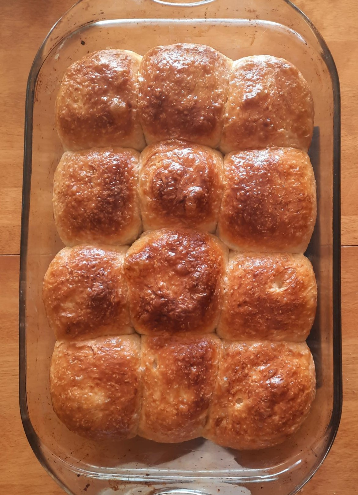
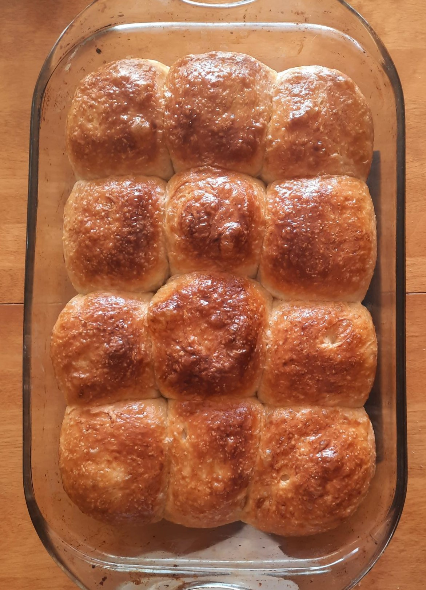

Ingredients
- Tangzhong
- 3 tbsp water
- 3 tbsp milk
- 2 tbsp bread flour
- 1 egg
- 1/2 cup milk
- 2 1/2 cups bread flour
- 1 tsp salt
- 1/4 cup sugar
- 1 tbsp yeast
- 4 tbsp unsalted butter, just-melted
Directions
Making the tangzhong
- In a small saucepan, combine the water, milk, and bread flour from the tangzhong ingredients and whisk until no lumps remain.
- Place the saucepan over low heat, and cook the mixture, whisking constantly, until thick and the whisk leaves lines on the bottom of the pan, about 3 to 5 minutes.
- Mix in the cold milk and egg to the tangzhong to cool it down.
- In a large bowl, combine all the dry ingredients for the dough.
- Pour in the tangzhong, butter, and water all at once.
- Knead everything together, making sure not to overwork the dough(important!).
- Once the dough has become stretchy and malleable, set it in an oiled bowl, cover with plastc wrap, and let rise in a warm place for 1 to 1.5 hours or until puffy(but not doubled in size).
- Gently punch dough down and separate it into 4 equal pieces.
- Shape each piece into a ball, then flatten it into a rectangle with a rolling pin.
- Fold the top and bottom ends of the dough in and flatten it again, the long way.
- Roll each rectangle of dough up and pinch the seams.
- Place them side by side into a well oiled 9x5 inch loaf pan.
- Allow to rise for about 50 minutes, or until puffy.
- Brush tops with an egg wash (1 egg and 1 tbsp milk), then bake at 350 degrees F for 25-30 minutes, until golden brown on top.
- Take loaf out of the oven and immediately brush tops with melted butter.
- Let rest for 10 minutes and enjoy!
When measuring the flour, make sure that you sift it before measuring out the 2.5 cups, since sifting will change the density. If the dough looks dry, let rise/rest double the time. Add only a sprinkle of salt if you're using salted butter. When mixing in the milk and egg, make sure you don't cook them in the hot rue. For an example of how the loaves are shaped, check out the video that I followed(6:15-7:15). This bread can also be shaped as bread rolls, which are described in the original recipe and the second video.
Original RecipeVideo that I followed
Another video
 
